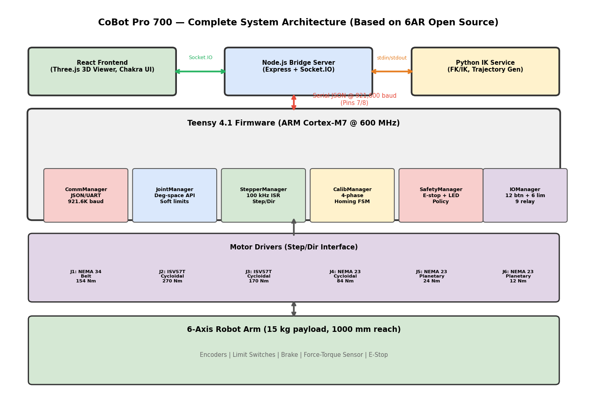
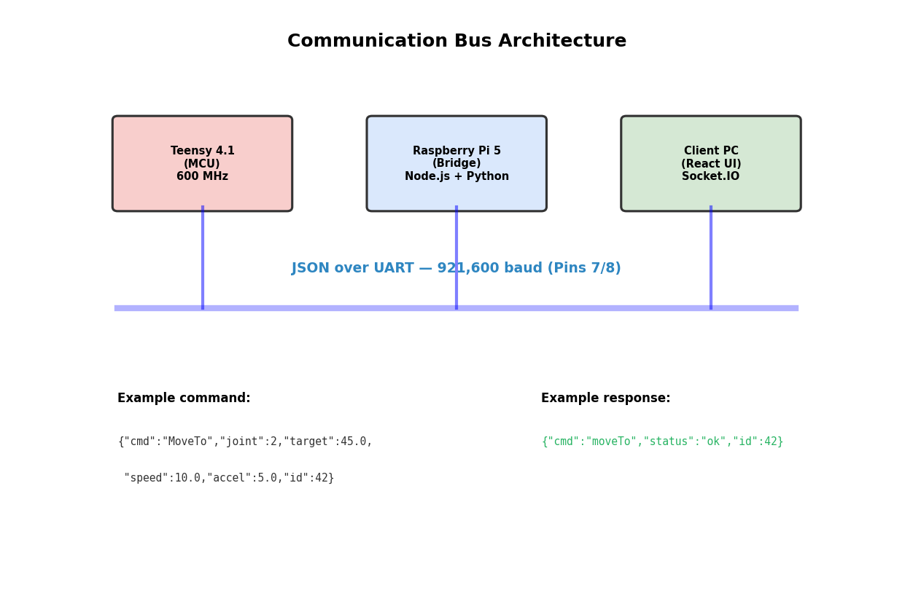
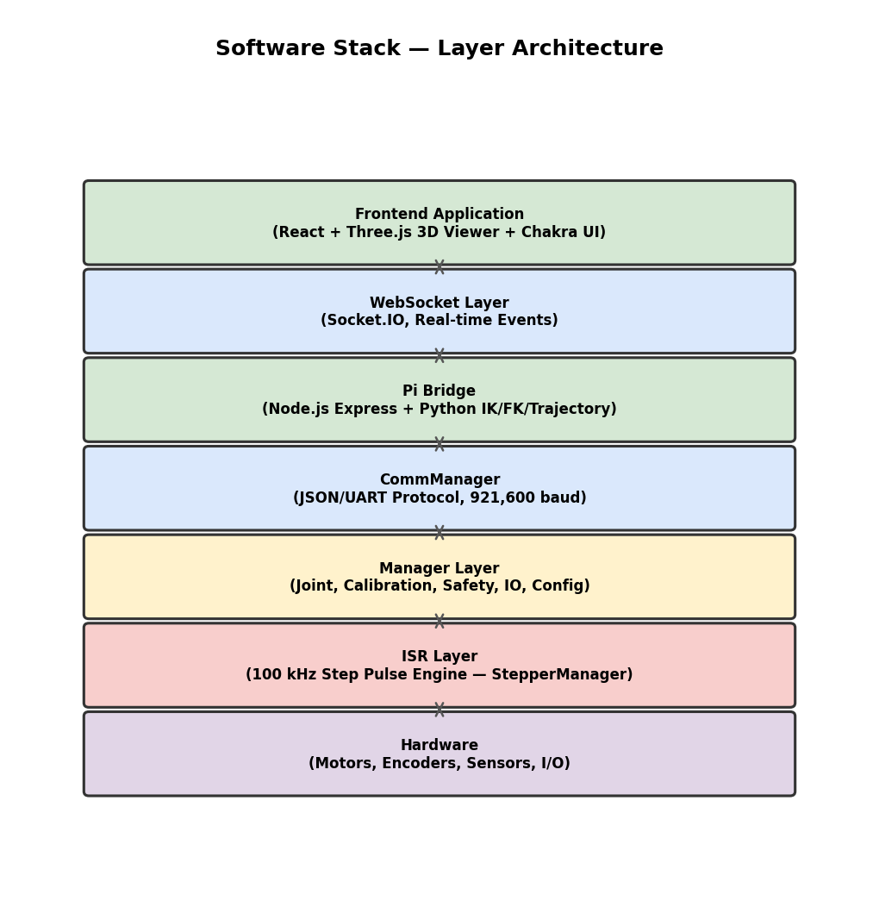

This document provides a comprehensive technical overview of the CoBot Pro system architecture spanning both the CoBot Pro 500 and CoBot Pro 700 models. It covers the controller hardware platform, communication bus topology, software stack layers, sensor subsystems, and safety architecture. For user-facing setup instructions, refer to the Quick Start Guide in the Contoso Robotics Support documentation. For market positioning and feature summary, see the Product Overview from Contoso Robotics Marketing.

The CoBot Pro main controller is built around a heterogeneous dual-processor architecture designed to separate real-time motion control from application-level processing:
Inter-processor communication between the A72 and R5F uses a shared-memory mailbox with CRC-32 integrity checking, delivering less than 50 µs latency for safety status updates. A hardware watchdog timer with a 10 ms timeout ensures the safety core can trigger an autonomous safe state if the application processor becomes unresponsive.
The system memory is partitioned as follows:
| Region | Address Range | Size | Owner |
|---|---|---|---|
| Application DRAM | 0x8000_0000 – 0x8FFF_FFFF | 4 GB | Cortex-A72 |
| Safety TCM | 0x0000_0000 – 0x0007_FFFF | 512 KB | Cortex-R5F |
| Shared Mailbox | 0x4400_0000 – 0x4400_FFFF | 64 KB | Both (mutex-guarded) |
| EtherCAT DMA Buffer | 0x4800_0000 – 0x4800_7FFF | 32 KB | ESC DMA engine |
| Peripheral I/O | 0x5000_0000 – 0x5FFF_FFFF | 256 MB | A72 (memory-mapped) |

The CoBot Pro employs two fieldbus networks for deterministic, low-latency communication:
EtherCAT is the primary real-time communication backbone connecting the main controller to all six joint servo drives. The bus runs in a line topology with ring-redundancy support. Key parameters:
A secondary CAN-FD bus at 5 Mbit/s data rate connects lower-priority peripherals: the teach pendant interface, digital I/O expansion modules (up to 4 modules with 16 DI + 16 DO each), and the optional Force-Torque Sensor FTS-600. CAN-FD frames carry up to 64 bytes of payload with a 20 ms polling cycle for I/O updates.
A dedicated Gigabit Ethernet port (RJ45) provides non-real-time connectivity for CoBot Studio IDE remote access, ROS 2 bridge communication via the CoBot ROS 2 Bridge, OPC UA server (v4.2.0+), firmware updates, and log file retrieval. This interface is isolated from the EtherCAT bus at the MAC layer to prevent management traffic from affecting real-time performance.

CoBot OS v4.2 is a layered software platform running on the Cortex-A72 application processor. The stack is organized into five distinct layers:
A preemptive real-time Linux kernel (PREEMPT_RT patch, kernel 5.15 LTS) provides deterministic scheduling for the motion control loop. The kernel is configured with a 1 kHz tick rate and SCHED_FIFO priority 99 for the EtherCAT master thread. Maximum measured scheduling latency is 35 µs under full CPU load.
The HAL provides unified APIs for accessing joint actuators, sensors, I/O, and communication interfaces. Device drivers for the Beckhoff ET1100 EtherCAT Slave Controller (ESC), ADC channels (16-bit, 10 kSPS for force-torque data), SPI (encoder interfaces), and GPIO are implemented as loadable kernel modules. The HAL exposes a POSIX-compatible ioctl interface for user-space access.
The motion planning and servo control layer runs as a real-time user-space process with memory-locked pages (mlockall). It implements:
The application framework provides high-level APIs in Python 3.11 and C++17 for task programming. Key components include the CoBot Studio IDE runtime, a REST API server (port 8080) for external integration, a task state machine engine, and the CoBot ROS 2 Bridge node. The framework communicates with the motion engine via a shared-memory ring buffer (128 KB, lock-free SPSC design).
The teach pendant UI is a Qt 6 application rendered on a 7-inch 1280×800 capacitive touchscreen. It provides drag-and-drop program creation, 3D robot visualization (OpenGL ES 3.2), real-time joint state monitoring, and safety zone configuration. Remote access to the UI is available through CoBot Studio IDE on desktop (Windows, Linux, macOS) over the management Ethernet interface.
The CoBot Pro integrates the following sensor subsystems:
The CoBot Pro safety architecture is designed as a dual-channel system certified to ISO 13849-1 PLe Category 4 and IEC 62443 for cybersecurity:
Safety configuration parameters (zone boundaries, force limits, speed limits) are stored in a write-protected EEPROM partition with CRC-64 integrity. Changes require authentication via the Safety Controller SC-100 configuration interface. For detailed safety controller setup instructions, see the Safety Controller Configuration guide in the Support documentation. For compliance and certification claims, see the Safety Certification Factsheet from Contoso Robotics Marketing.
The CoBot Pro provides the following integration interfaces for factory-floor connectivity:
| Interface | Protocol | Use Case |
|---|---|---|
| EtherCAT IN/OUT | EtherCAT CoE (CiA 402) | Joint servo drives, FTS-600 |
| Ethernet (RJ45) | TCP/IP, ROS 2 DDS, OPC UA | CoBot Studio IDE, ROS 2 Bridge, SCADA |
| CAN-FD | CAN 2.0B / CAN-FD | Digital I/O expansion, teach pendant |
| USB 3.0 (Type-A × 2) | USB Mass Storage, UVC | Firmware recovery, USB cameras |
| Digital I/O (M12) | 24V PNP / NPN configurable | Gripper control, conveyor signals |
| Analog Input (M12) | 0–10V / 4–20mA | External force sensors, pressure gauges |
Document version 4.2.0 | Last updated: 2025-01-15 | Contoso Robotics Engineering